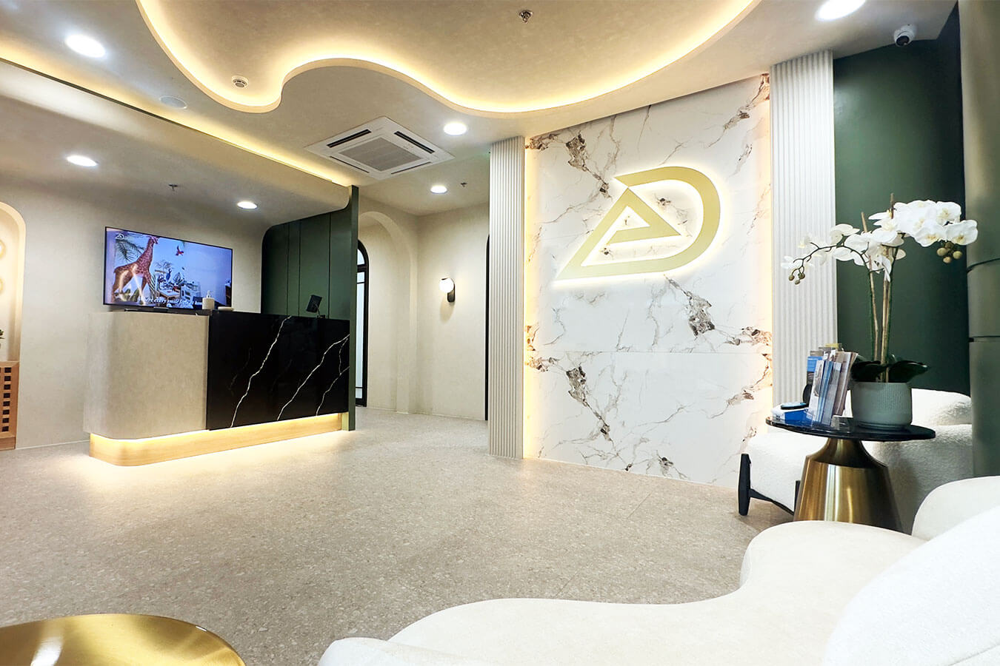

DisciplineHub
General dentistry
Check-ups, oral prophylaxis, fillings and preventive care.

Muntinlupa City
Our southern clinic is on the second floor of 2225 Commerce Mall, Alabang Town Center, Ayala Alabang, Muntinlupa 1780.
2nd Floor, 2225 Commerce Mall, Alabang Town Center, Ayala Alabang, Muntinlupa 1780.

Unit 2225
Level two of Commerce Mall, Muntinlupa. Paid parking inside the building.
This clinic is open all seven days and closes at 20:00 every day. Weekends open an hour earlier than weekdays, which is the earliest weekend opening we keep anywhere.
| Day | Opens | Closes |
|---|---|---|
| Monday | 11:00 | 20:00 |
| Tuesday | 11:00 | 20:00 |
| Wednesday | 11:00 | 20:00 |
| Thursday | 11:00 | 20:00 |
| Friday | 11:00 | 20:00 |
| Saturday | 10:00 | 20:00 |
| Sunday | 10:00 | 20:00 |
+63 917 114 0598
Call the number above to reach this clinic. Use email if your question is not time-sensitive or if you want to send records ahead of a first visit.
What the early weekend is for
The weekend hours here suit family appointments, where a child's check-up and an adult's cleaning are booked back to back on the same visit. Say so when you call and the front desk will place the two together.
Booking a longer procedure
The last appointment of the day is set by treatment length. A longer procedure needs an earlier slot, so book early in the day for surgical or restorative work.
Public holiday hours can differ from the hours shown above. Please call the clinic to check before visiting on a public holiday.
Elevate Dental is a group of specialists. Our specialists work by discipline, which means an orthodontic case is planned by an orthodontist, a root canal is performed by an endodontist, and a crown or bridge is designed by a prosthodontist.
A complex case that gets referred elsewhere costs you the trip, and then a second trip for the review.
This clinic carries the same specialist bench as our other three, so the assessment, the planning and the treatment can happen here instead. The full roster, with each specialist's discipline, is published on the specialists page.
General dentistry
Check-ups, oral prophylaxis, fillings and preventive care.
Cosmetic dentistry
Porcelain and composite veneers, whitening and smile design.
Orthodontics
Braces and Invisalign (Clear Aligners).
Endodontics
Root canal treatment and retreatment.
Periodontics
Gum disease, scaling and root planing, gum contouring.
Prosthodontics
Crowns, bridges, complete dentures and removable partials.
Oral surgery
Surgical extractions, dental implants and bone procedures.
Pediatric dentistry
Check-ups, sealants and fluoride treatment for children.
Dental X-rays
Digital radiography, plus the imaging covered in the next stage.
3D CBCT imaging is installed at this clinic. CBCT is available at all four of our clinics, so a patient in the south is scanned in the south.
A CBCT scan shows bone volume, nerve position and root anatomy in three dimensions, which is what implant placement, impacted extractions and difficult root canals are planned against.

3D CBCT imaging
Bone volume, nerve position and root anatomy in three dimensions, taken in the same building where the case is planned.
Installed at all four clinicsiTero intraoral scanner
Digital scanning of the teeth in place of putty impressions. Worked with across the group.
RayFace facial scanner
Facial scanning, used where a plan has to account for the face and not only the teeth. Worked with across the group.
OccluSense bite analysis
Measurement of how the teeth meet under load, rather than an impression of how they sit at rest. Worked with across the group.
Sol Dental Laser
Laser instrumentation, used in soft-tissue work. Worked with across the group.
AirFlow (guided biofilm therapy)
The cleaning protocol that removes the film before the deposit. Worked with across the group.
Zoom whitening
In-clinic whitening, carried out under supervision. Worked with across the group.
Piezotome
Ultrasonic instrumentation, used in surgical work. Worked with across the group.
Elevate Dental does not accept HMO or dental insurance. All treatment is self-pay. HMO coverage cannot be used for dental treatments at our clinics.
Your treatment plan is quoted after clinical assessment, so you know the figure before anything begins. Published treatment prices for the group are on the prices page.
Patients treated here
Patients have published written accounts of their treatment with us, and some of those accounts name the clinic they were treated at. None appears on this page, and the reason is set out below rather than left as a gap.
Book at the Alabang clinic, or call it directly on +63 917 114 0598 and speak to the front desk about which day suits your case.